Regression comparison
Download resultsDataset
Training setting
Repulsion weight
Repulsion location
Compare repulsion locations
Method
Random points redraw every step and exclude all training inputs. Training and random use B points; combined uses 2B. Prediction axes match within each DE or BDKN row.
Functional repulsion
BetterWorse · relative rank within each column
DE
| Repulsion inputs | RMSE | NLL | Training seconds |
|---|---|---|---|
| Training | 0.35039 | 0.53474 | 24.47 |
| Random | 0.33543 | 0.43027 | 26.46 |
| Training + random | 0.41636 | 0.58286 | 24.60 |
BDKN
| Repulsion inputs | RMSE | NLL | Training seconds |
|---|---|---|---|
| Training | 0.35935 | 0.48428 | 24.61 |
| Random | 0.36115 | 0.41499 | 26.60 |
| Training + random | 0.43602 | 0.53529 | 24.74 |
Stage 1 · total loss and data fit
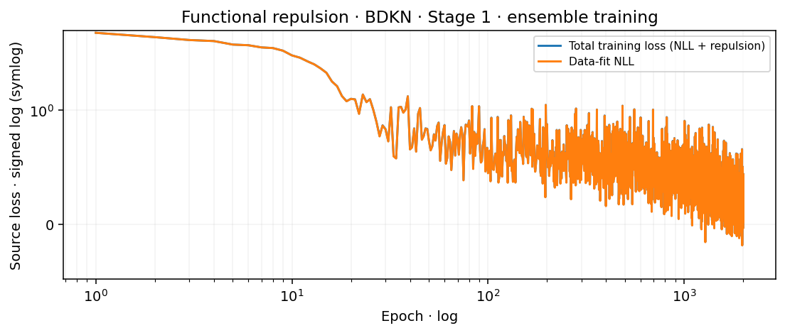
X: log · Y: signed log
X: log · Y: signed log
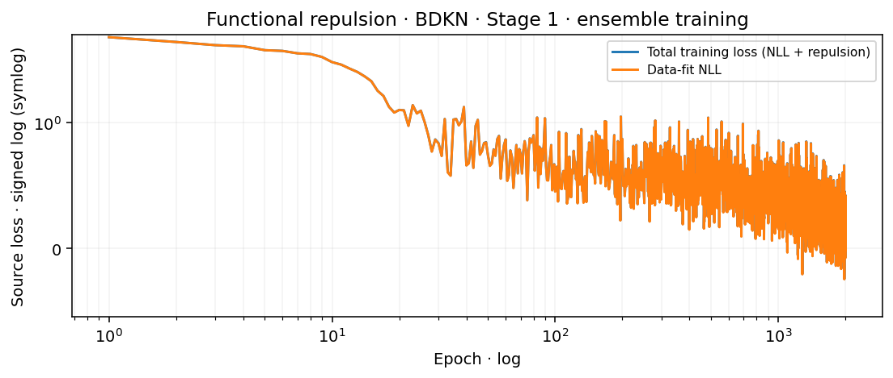
X: log · Y: signed log
Repulsion loss R only
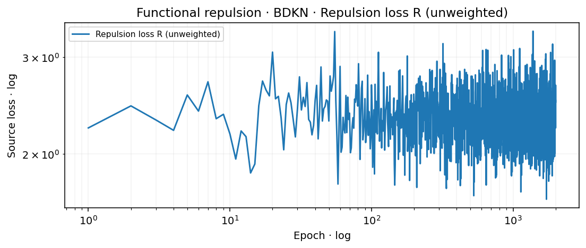
X: log · Y: log
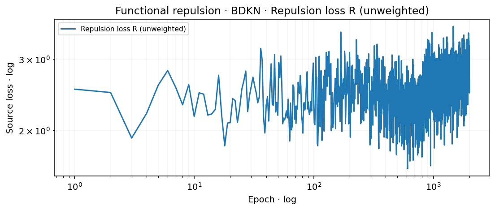
X: log · Y: log
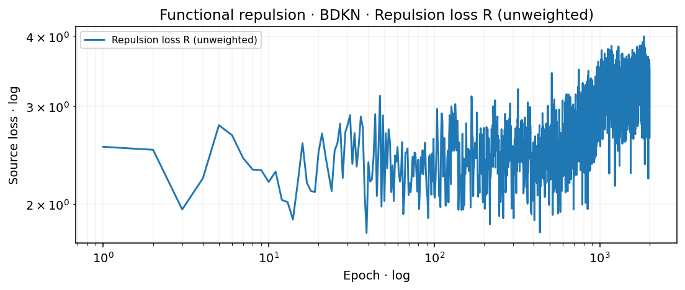
X: log · Y: log
Stage 2 · Bayesian marginal NLL
X: log · Y: log
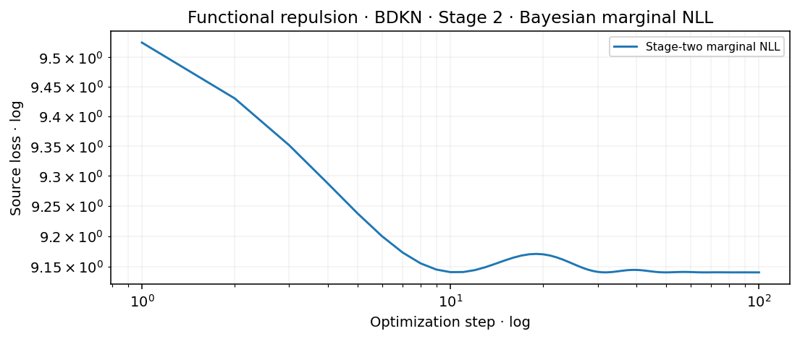
X: log · Y: log
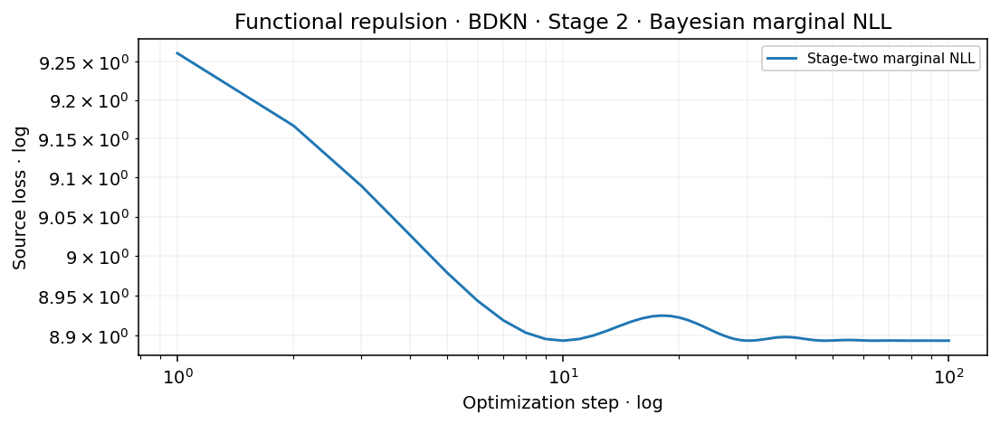
X: log · Y: log
First-order repulsion
BetterWorse · relative rank within each column
DE
| Repulsion inputs | RMSE | NLL | Training seconds |
|---|---|---|---|
| Training | 0.34905 | 0.50785 | 52.33 |
| Random | 0.34607 | 0.45786 | 53.41 |
| Training + random | 0.40703 | 0.60671 | 50.30 |
BDKN
| Repulsion inputs | RMSE | NLL | Training seconds |
|---|---|---|---|
| Training | 0.36035 | 0.48966 | 52.47 |
| Random | 0.37226 | 0.42912 | 53.55 |
| Training + random | 0.41690 | 0.53408 | 50.43 |
Stage 1 · total loss and data fit
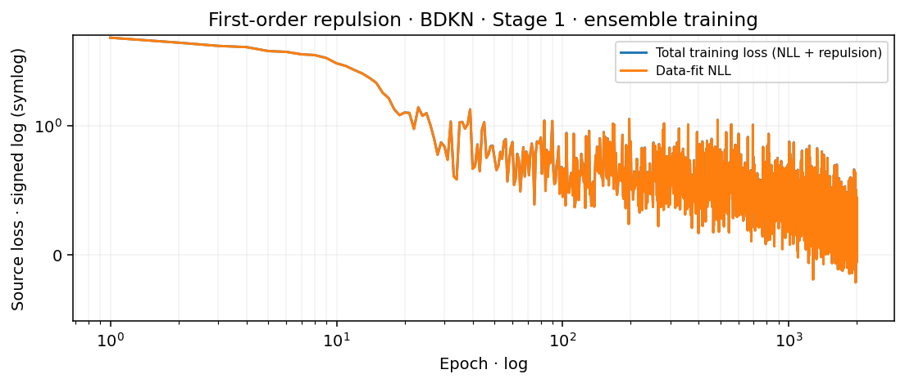
X: log · Y: signed log
X: log · Y: signed log
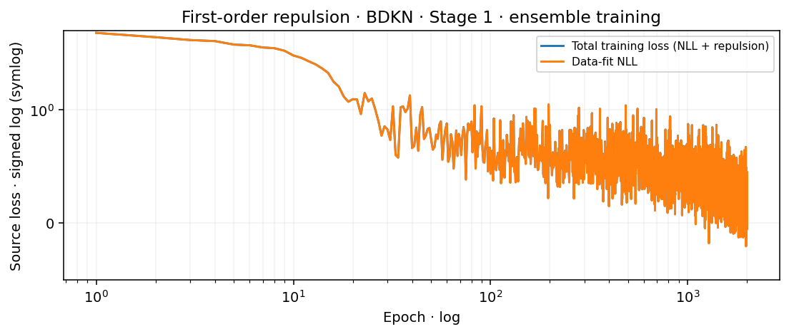
X: log · Y: signed log
Repulsion loss R only
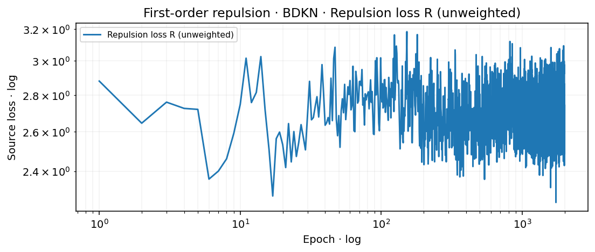
X: log · Y: log
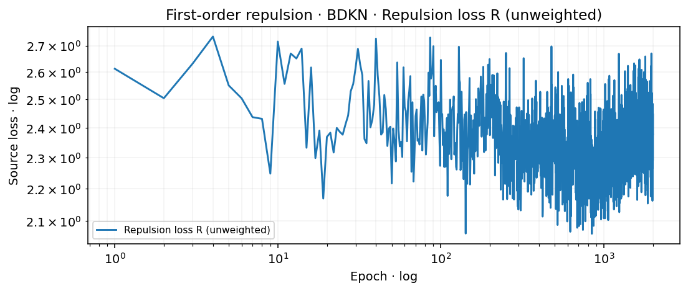
X: log · Y: log
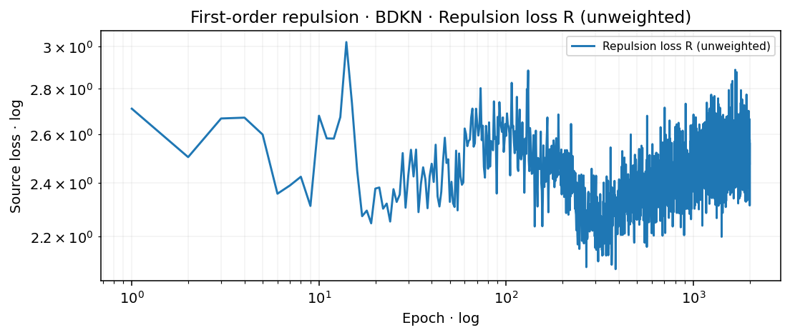
X: log · Y: log
Stage 2 · Bayesian marginal NLL
Weight repulsion · location-independent
The loss compares network parameters directly. These same results apply to every location.
| Stage | RMSE | NLL | Training seconds |
|---|---|---|---|
| DE | 2.78489 | 1.04977 | 18.42 |
| BDKN | 3.67677 | 1.16932 | 18.56 |